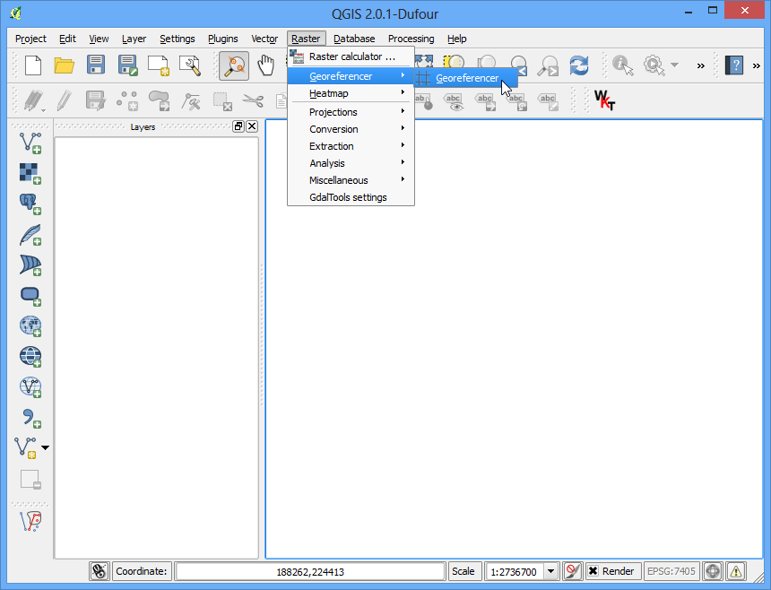
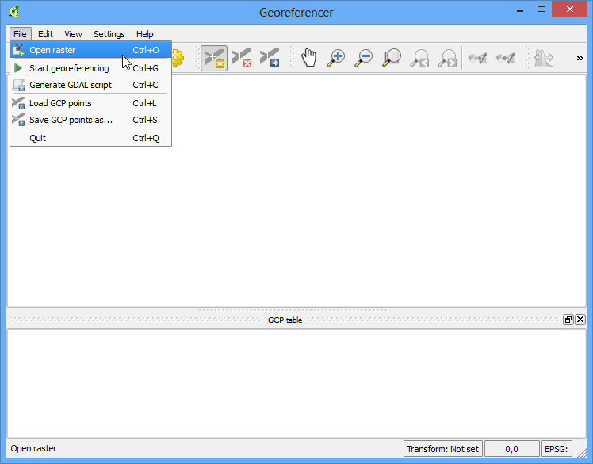
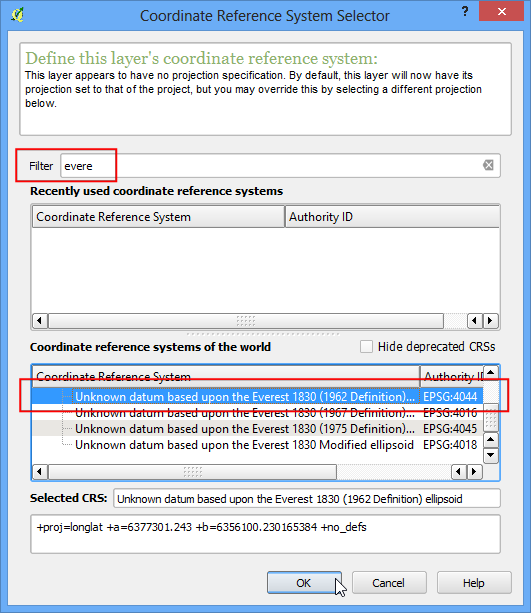
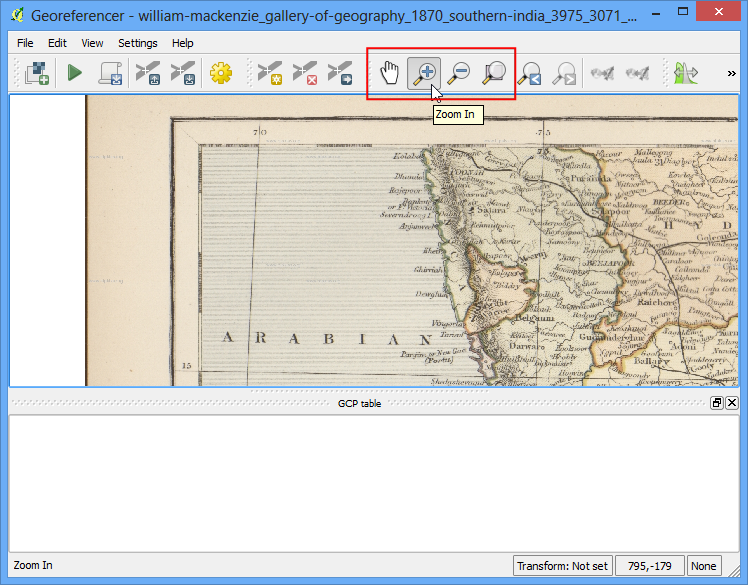
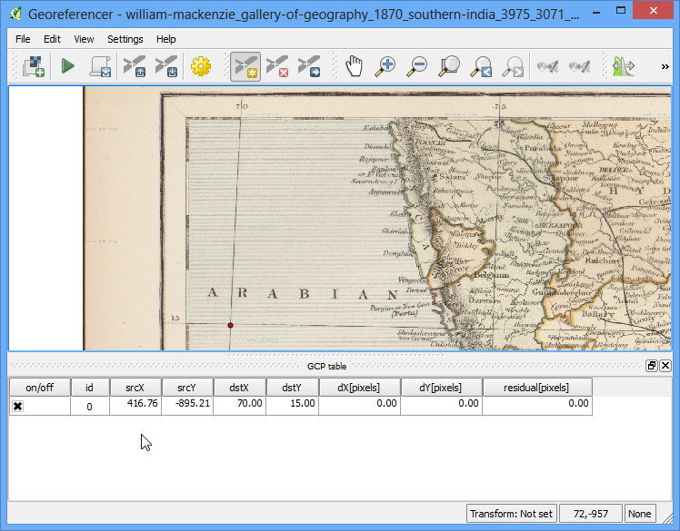
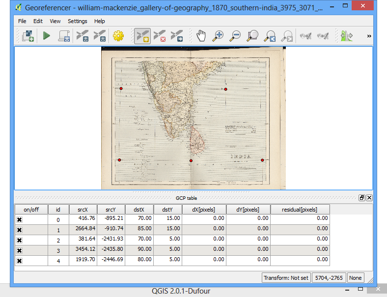
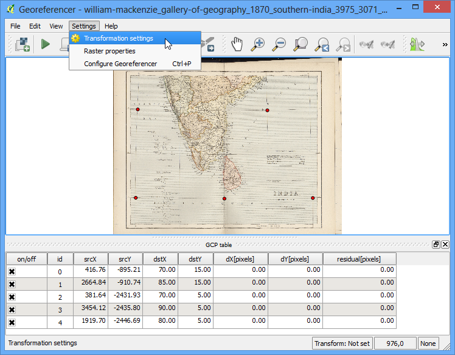
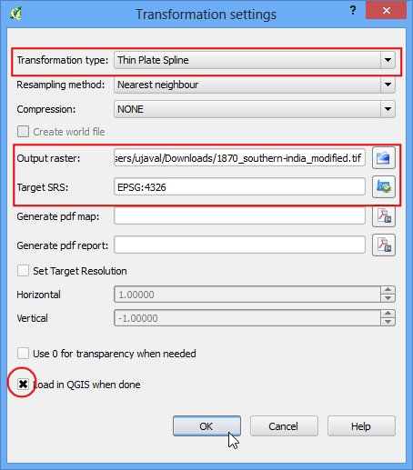

Georeferensi Lembaran Topo dan Peta hasil Scan
Kebanyakkan proyek GIS membutuhkan georeferensi pada sejumlah data raster. Georeferencing adalah proses untuk menetapkan koordinat dunia nyata untuk setiap pixel pada layer. Sering koordinat-koordinat ini didapatkan dengan melakukan survey lapangan - mengumpulkan koordinat dengan alat GPS untuk mengidentifikasi fitur pada sebuah gambar atau peta. Pada sejumlah kasus, dimana anda mencoba untuk mendigitalisasi peta scan, anda bisa memperoleh koordinat dari tanda pada peta itu sendiri. Menggunakan koordinat sampel atau GCP (Ground Control Points), gambar semacam dibengkokkan untuk penyesuaian dengan sistem koordinat yang sudah dipilih. Di tutorial ini saya akan mendiskusikan komsep, strategi dan alat-alat yang ada di QGIS untuk menggapai Georeferensi dengan akurasi tingkat tinggi.
Tinjauan Tugas
Kita akan menggunakan map hasil scan India Utara dari 1870 dan melakukan georeferensi menggunakan QGIS.
Skill lain yang akan anda pelajari
Prosedur
1.Georeferensi di QGIS dilakukan lewat plugin ‘Georeferencer GDAL’ . Ini adalah plugin inti yang berarti sudah menjadi bagian dari insatalasi QGIS. Anda hanya perlu mengaktifkannya. Akses dan aktifkan plugin Georeferencer GDAL pada tab Installed . Lihat docs/using_plugins untuk detail lebih lengkap bagaimana bekerja dengan plugins.

Plugin ini terinstall di menu Raster. Klik Raster –> Georeferencer –> Georeferencer untuk membuka plugin

Jendela Plugin terbagi menjadi 2 bagian . Bagian atas dimana raster akan ditampilkan dan bagian bawah dimana sebuah tabel yang menunjukkan Ground Control Point (GCP) akan muncul.

Sekarang kita akan membuka gambar JPG kita. Akses :File –> Open Raster . Jelajagi gambar hasil unduhan yang berupa peta scan dan klik Open.

Pada layar setelahnya, anda akan ditanya untuk memilih CRS. Ini untuk mengatur proyeksi dan datum dari poin kontrol anda. Jika anda sudah mengumpulkan ground control point memakai alat GPS, anda akan memiliki CRS WGS84. Jika anda mengeoreferensikan peta seperti ini,anda akan mendapat informasi CRS dari peta itu sendiri. melihat gambar peta kita, koordinatnya berbentuk lintang/bujur. Tidak ada informasi datum yang diberikan, jadi kita harus membuat asumsi yang cocok. karena ini adalah India dan petanya lumayan tua, kita bisa memperkirakan bahwa datum Everest 1830 akan memberikan hasil yang baik.

Anda akan melihat gambar akan dibuka pada bagian atas.

Anda bisa menggunakan kontrol zoom/pan di toolbar untuk mempelajari lebih jauh peta tersebut.

Sekarang kita ingin menetapkan koordinat untuk sejumlah titik pada peta ini. jika anda lihat dekat-dekat, anda akan melihat grid koordinat dengan tanda. Memakai grid ini, anda bisa menentukan koordinat X dan Y dari point dimana grid tadi berpotongan. Klik Add Point pada toolbar.

- In the pop-up window, enter the coordinates. Remember that X=longitude and
Y=latitude. Click OK.

Anda akan melihat tabel GCP sekarang memiliki sebuah baris dengan detail dari GCP pertama anda.

Dengan cara yang sama, tambahkan sedikitnya 4 GCP yang menlingkupi seluruh gambar. Semakin banyak poin yang kamu punya, semakin akurat pula gambarmu terdaftar pada koordinat target.

Ketika anda sudah memilik poin yang cukup, akses .

Pada dialog Transformation settings , pilih guilabel:Transformation type dengan Thin Plate Spline . Beri nama raster output dengan 1870_southern_india_modified.tif . Pilih EPSG:4326 sebagai Spatial Reference System atau SRS target sehingga hasil gambar berada di datum yang sangat sesuai. Pastikan Load in QGIS when done diberi tanda cek. Klik OK.

Kembali ke jendela xxx, akses xxx . Ini akan memulai proses pengadaptasian atau pelengkungan gambar menggunakan GCP dan membuat raster target.

Ketika proses selesai, anda akan melihat layer yang telah tergeoreferensi dibuka di QGIS.

Georeferensi sekarang sudah lengkap . Tetapi sepert sebelumnya, adalah latihan yang baik untuk memverifikasi hasil kerja anda. bagaimana kita memeriksa bahwa hasil georeferensi kita sudah akurat ? Dalam kasus ini , buka shapefile batas negara dari sumber yang terpercaya seperti dataset Natural Earth kemudian bandingkan. Anda akan melihat apabila mereka cukup bersesuaian. Ada sejumlah error dan ini dapat ditingkatkan lebih jauh dengan cara membuat lebih banyak GCP, mengubah transformasi parameter dan mencoba datum yang berbeda.

{kind=link}
{kind=link}